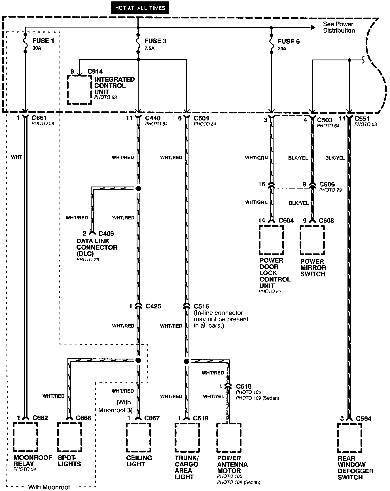
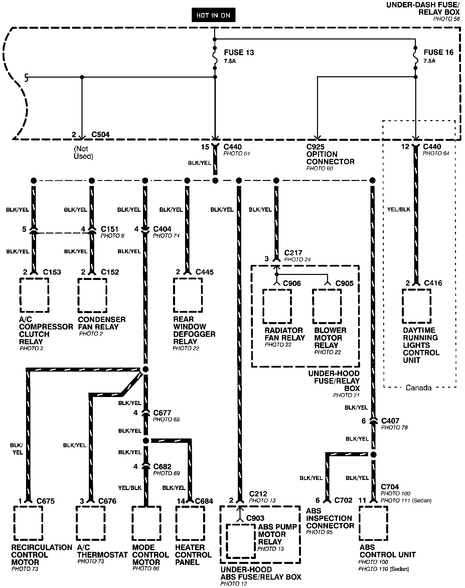
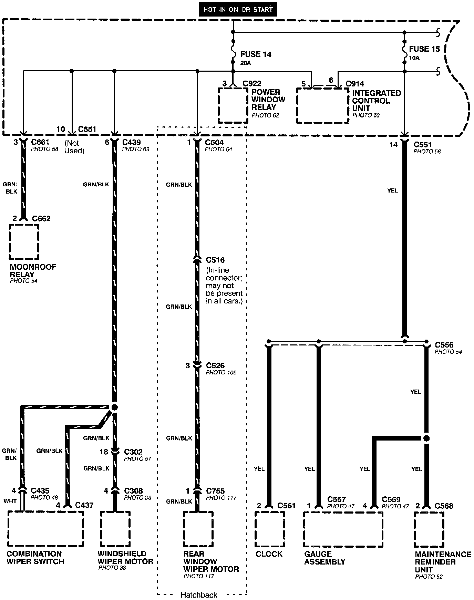
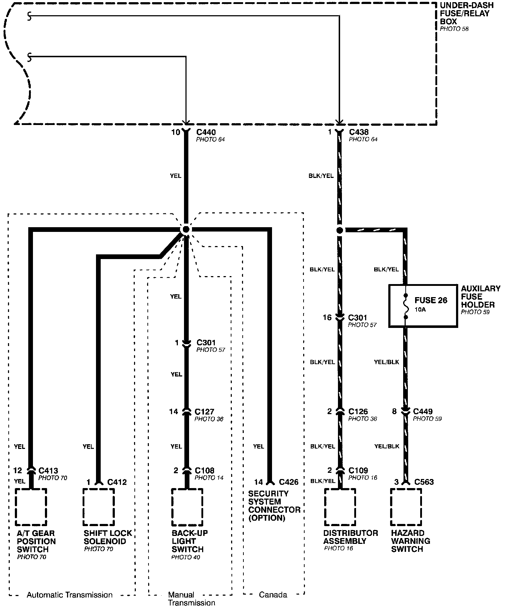
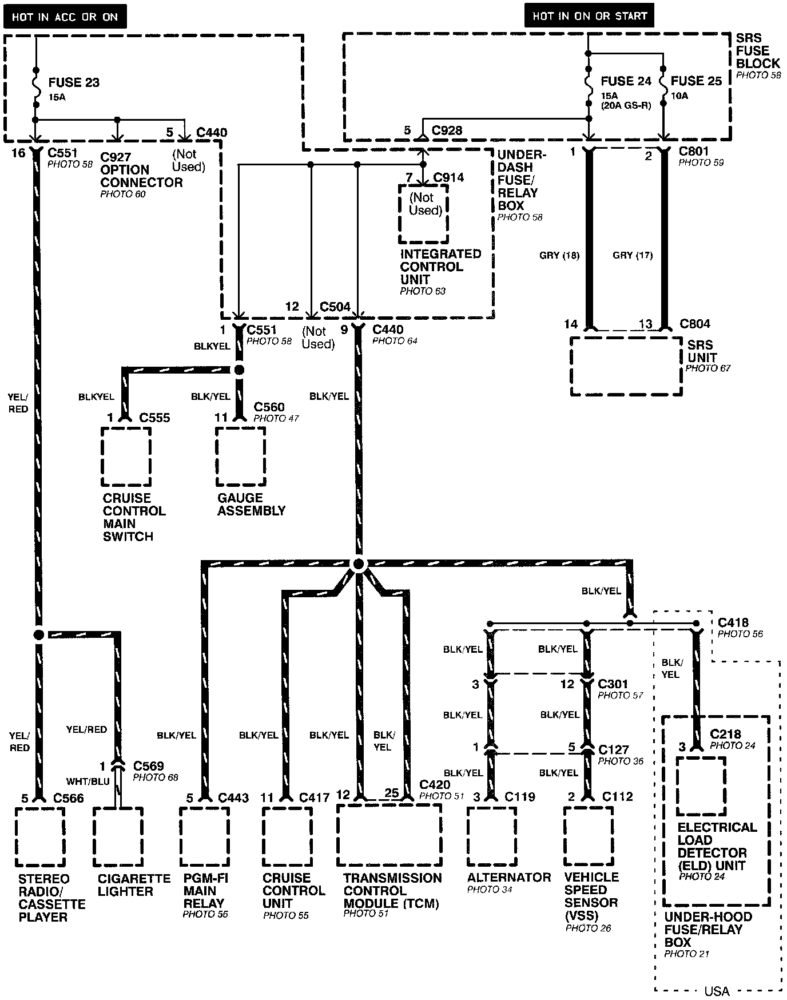
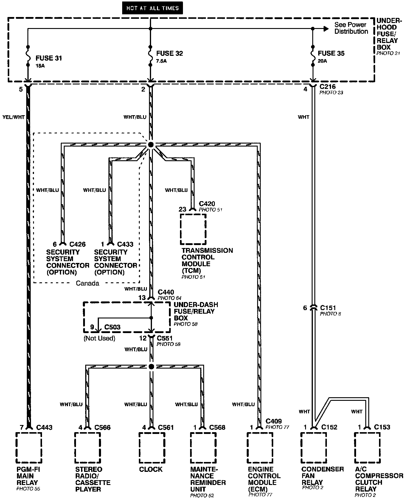
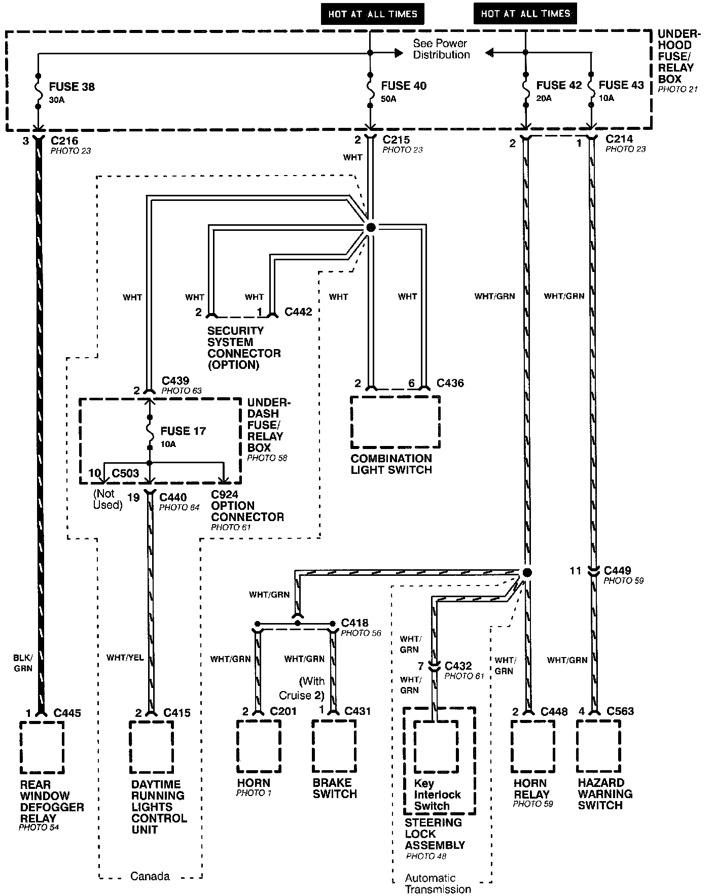
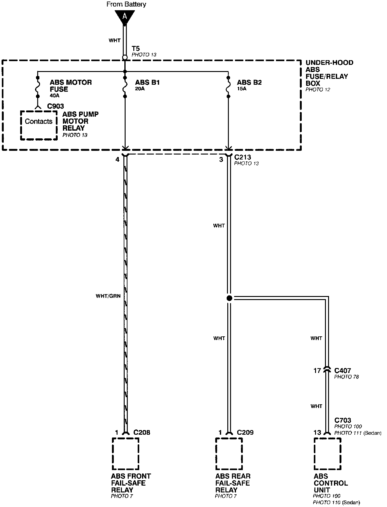

From Fuses to Relays and Components
Power Distribution-From Fuses To Relays And Components (Part 1 Of 8):

Power Distribution-From Fuses To Relays And Components (Part 2 Of 8):

Power Distribution-From Fuses To Relays And Components (Part 3 Of 8):

Power Distribution-From Fuses To Relays And Components (Part 4 Of 8):

Power Distribution-From Fuses To Relays And Components (Part 5 Of 8):

Power Distribution-From Fuses To Relays And Components (Part 6 Of 8):

Power Distribution-From Fuses To Relays And Components (Part 7 Of 8):

Power Distribution-From Fuses To Relays And Components (Part 8 Of 8):
